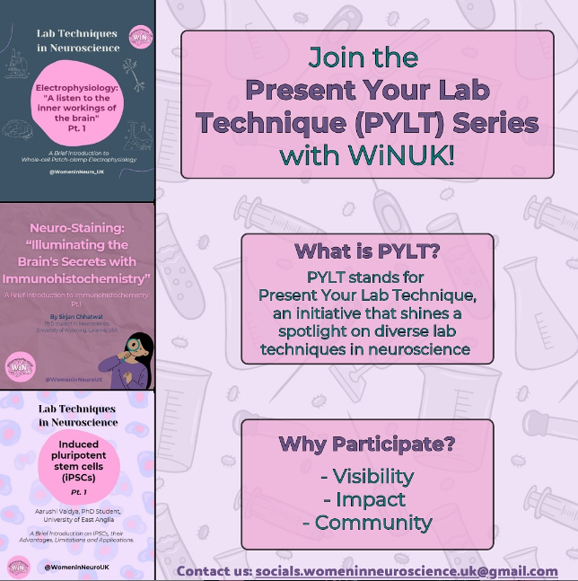
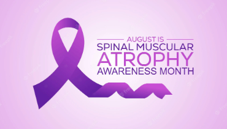
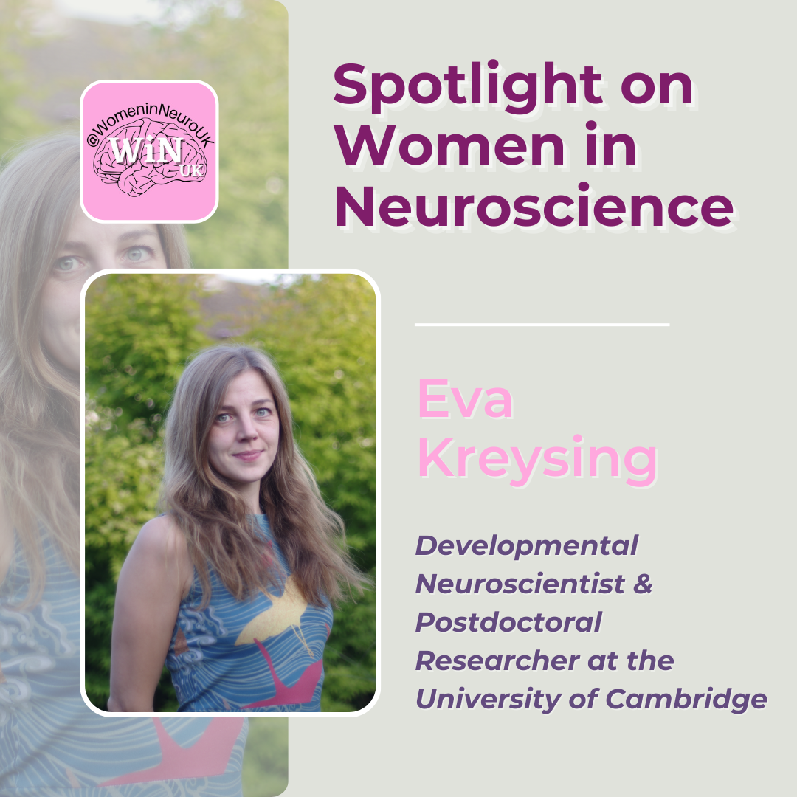
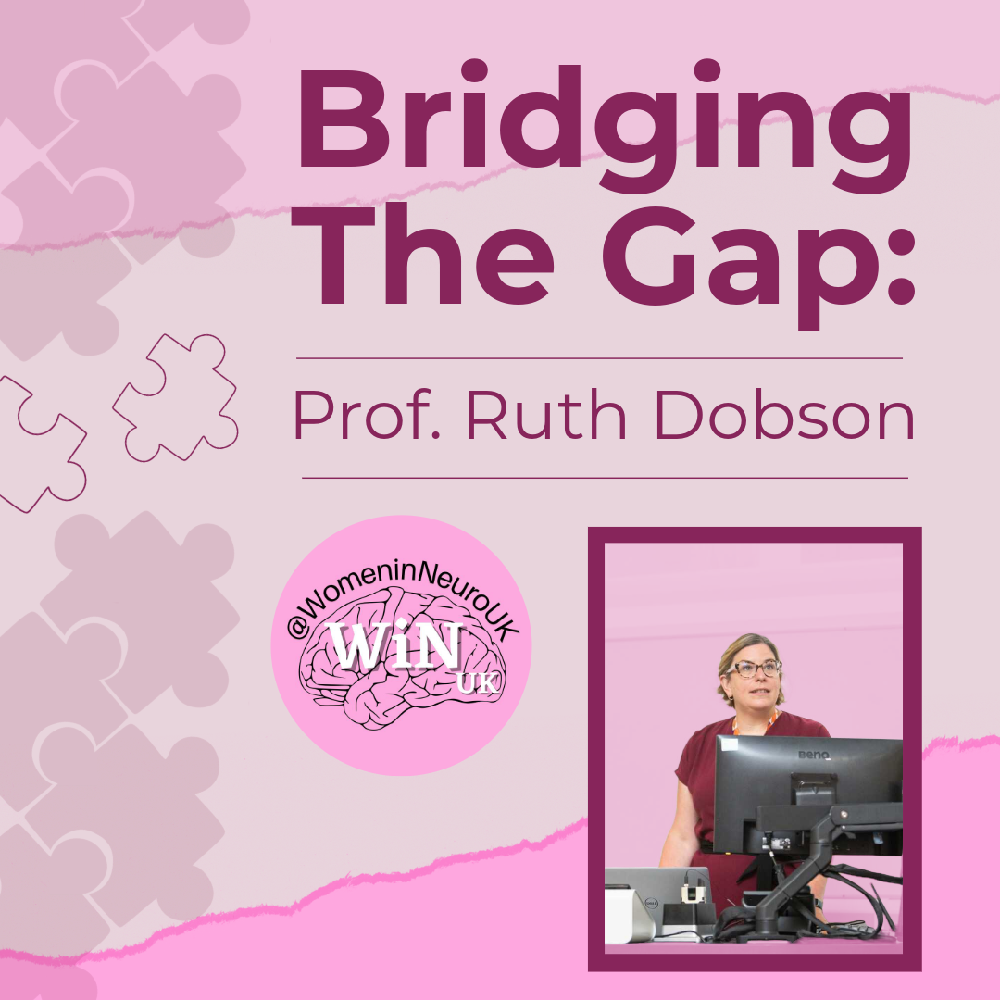
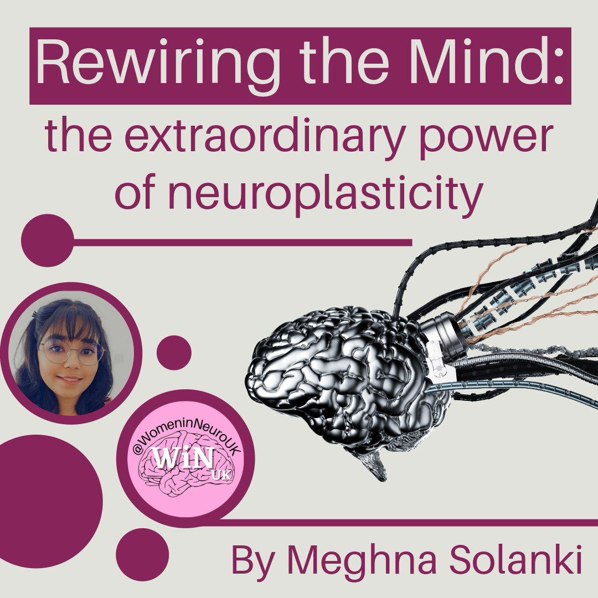
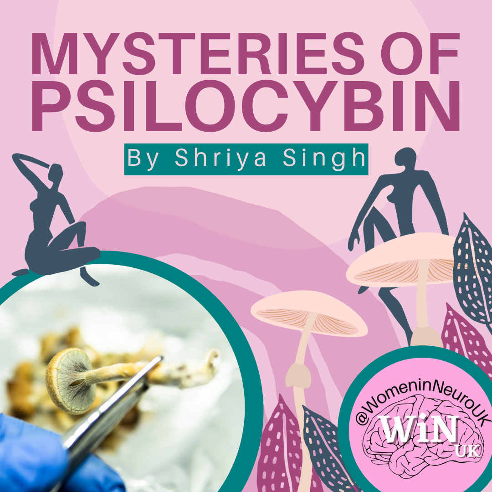

NEW VOLUNTEERS
Welcome to new WiNUK volunteers joining our new Human Resources
subteam!
- Ciara McCready- HR Coordinator
- Kristina Ulicna- Administration
- Amy Boyack- Lead Interviewer
- Sofia Johnston- Volunteer Wellbeing
- Ruta Cakla- Onboarding
EVENTS RECAP
We hosted Stephanie Grönke, a womens' leadership coach to carry out
a dynamic workshop focusing on learn how to tackle imposter
syndrome, embrace feminine traits and take charge of shaping your
career.
Participants engaged in self-reflection and left empowered with
actionable strategies to confidently shape their professional
futures.
If you were there, we’d love to hear how your experience was:
https://docs.google.com/forms/d/e/1FAIpQLSct4JgfIe8SvYcITykFlZnlV5tzqrRckvQmbhc9PI2qu3gTA/
viewform?usp=sf_link
UPCOMING EVENTS
September 4th: WiNUK On Tour: South West at the University of
Plymouth
WiNUK on tour! Our founder Lizzie will be presenting at the ARUK
ECR day at University of Plymouth on the 4th September!
If you’ve signed up for the conference, come find us!
We may even have some free merch! We're excited to meet you!

Save the date
October: Virtual event on the Neuroscience of Psychadelics
November 29th: WiNUK Awards 2024 at the University of Cambridge
and virtually'
Women in Neuroscience UK are holding their first WiNUK Awards, in
person and online on November 29th. The WiNUK Awards aim to uplift
female neuroscientists by rewarding positive contributions to
neuroscience research and community.
Nominations are open until September 13th! Nominate here:
https://docs.google.com/forms/d/e/1FAIpQLSe6uT62e2ZlkxQlwxXYzEmm0q4lZS9eAWIEKwjgqAUVLtMPQ/
viewform
Get nominating now to celebrate a woman who has made an impressive
contribution to neuroscience research or to recognise someone who
has improved the neuroscience community through mentorship,
science communication, and/or championing diversity in STEM.
UPCOMING SOCIALS
PYLT (Caitlin)
We’re back with the PYLT series. PhD student Caitlin will take
over this month's series, sharing her groundbreaking research on
extracellular vesicle (EV) derived microRNAs and their potential
as biomarkers and therapeutics for ischemic stroke. EVs, released
by all cells, are crucial for intracellular communication and
carry diverse cargo, including proteins, lipids, and RNAs, which
reflect the physiological state of their originating cells.
In her PYLT session, Caitlin will showcase how EVs can be
engineered to deliver therapeutic microRNAs to treat ischemic
stroke, offering insights into the promising future of EV-based
therapies for neurological conditions.

Interested in partaking in WiNUK’s PYLT series? Fill out this
form:
https://docs.google.com/forms/d/e/1FAIpQLSeALjqVlt_YCajAEEJFZObt0KaKi07PIZurO3qdoE2
GRA-Fug/viewform
and submit your proposal today! 🧠💡
SOCIALS RECAP
Spinal Muscular Atrophy Awareness Month
Throughout August, we recognise Spinal Muscular Atrophy (SMA)
Awareness Month, a crucial time to raise awareness about this
genetic disease affecting the motor nerve cells in the spinal
cord. SMA can significantly impact mobility and muscle strength,
particularly in children and young adults.
WiNUK developed a graphic to highlight key facts and promote
understanding about SMA. Together, we can make a difference in
raising awareness and advocating for those living with SMA. If you
missed it, make sure to check out our socials!

BLOG ‘MONTH IN REVIEW’
Over the last month, we have brought you lots of fascinating
articles. We:

Discussed how Dr Eva Kreysing applies her love for
physics and neuroscience to her research
Considered consciousness and the subjectivity of human
experience in our review of Anil Seth’s Being You

Chatted about the sex and racial disparities in the
diagnosis and experience of multiple sclerosis with
Professor Ruth Dobson

Marvelled at the brain’s incredible capacity for rewiring
itself

Considered the utility of psilocybin for anxiety, depression
and addiction
If you’ve missed these thought-provoking articles, visit the blog to
catch up: Blog | Womeninneurouk
(womeninneuroscience.wixsite.com/winuk/blog)
BLOG
Fancy writing for the WiNUK blog , but not sure what to write about?
Not to worry - the editors regularly put together a collection of
prompts to get you started.
REALITY
Section Editor: Lauren Wallis
-
Neurosurgery Awareness Month! - discuss novel findings/papers,
the ethics and complexities of conducting research on human
patients.
- Advice for A-Level Results Day
RESEARCH
Section Editor: Julia Dabrowska
REVIEW
Section Editor: Rebecca Pope
-
Book Review: Descartes' Error: Emotion, Reason and the Human
Brain by Antonio Damasio
- Review an event, lecture or discussion!